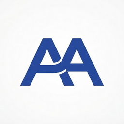

Sobre mí
Anderson Isaac Arriola Carias
Estudiante de Desarrollo de Aplicaciones Web (DAW)

Hola Soy Anderson. Actualmente me estoy formando en Desarrollo de Aplicaciones Web (DAW) en el IES Tetuán de las Victorias. Me motiva el mundo de la programación y el diseño de interfaces, y disfruto transformando ideas en proyectos digitales limpios, funcionales y bien estructurados.
El centro
IES Tetuan de las Victorias

Durante mi formación en el IES Tetuán de las Victorias, he desarrollado habilidades clave en programación, gestión de bases de datos y maquetación web. El centro nos brinda un entorno de aprendizaje práctico orientado a proyectos reales.
Mi Favicon
Identidad Visual · Marca Personal

Mi favicono combina mis iniciales (Anderson Arriola) en un diseño tipográfico limpio y geométrico. Su paleta en azul marino refleja profesionalidad, orden y elegancia, representando mi enfoque al desarrollar interfaces digitales